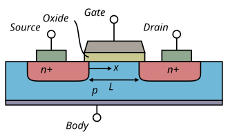
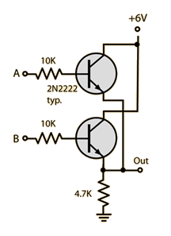

¿Cómo funciona un computador?
La conducción eléctrica
Lo que hace un computador es mover un montón de electrones. Para entender el computador, debemos entender cómo se mueven estas partículas en diferentes materiales. No entraremos en muchos detalles, pero necesitamos un par de hechos
Los portadores de carga son los electrones: Los protones también tienen carga, pero son mucho más pesados y difíciles de mover. Las corrientes eléctricas consisten en electrones débilmente ligados que se mueven de un lugar a otro.
El principio de exclusión de Pauli: Dos electrones no pueden tener el mismo estado. Si tenemos un átomo completamente ionizado (sin electrones) y le agregamos un electrón, éste tenderá a ocupar el estado de mínima energía. Al llegar un segundo electrón, no puede estar en el mismo estado, así que ocupa otro. A medida que llenamos el átomo de electrones, estos ocuparán estados de energías más altas (menos ligados al átomo).
Al poner muchos átomos juntos en un material, los niveles de energía se mezclan formando bandas de energía. Estas bandas pueden acomodar muchos electrones. La energía máxima ocupada por un electrón cuando llenamos el material ignorando los efectos de la temperatura se llama energía de Fermi. Las bandas de energía por encima de las de Fermi están vacías a bajas temperaturas.
Si la energía de Fermi cae en el medio de una banda de energía, el material es un conductor. Los electrones pueden adquirir un poco de energía cinética sin salirse de la banda y así moverse por el material.
Si la energía de Fermi cae en la separación de dos bandas, el material es un aislante. Si un electrón quiere moverse, debe adquirir un poco de energía cinética, pero no puede ya que su banda está llena. A ese electrón le queda difícil adquirir suficiente energía cinética para pasar de la última banda llena a la primera banda vacía.
Semiconductores
Un semiconductor es un aislante pero tal que la última banda llena está muy cerca de la primera banda vacía.
Normalmente los semiconductores se dopan. Es decir, se les agrega una pequeña cantidad de átomos diferentes a los del material, pero que se encuentran cercanos en la tabla periódica.
Esto quiere decir que esos átomos de dopaje les sobra o les falta un electrón respecto a los del material. Cuando les falta un electrón, se dice que son de tipo p, cuando les sobra uno son de tipo n.
A continuación vemos el estado de las bandas de conducción para diferentes tipos de materiales. Cuando una banda tiene una región semillena (gris), esta puede conducir electricidad fácilmente. (Fuente: Wikipedia)
¿Para qué sirve eso? Una aplicación sencilla son los diodos. Estos consisten en una juntura de un semiconductor tipo p con uno de tipo n. Los electrones sobrantes en el tipo n pueden viajar hacia el tipo p para llenar los huecos presentes en este. Pero si se aplica un voltaje en la dirección opuesta, no puede pasar corriente. El diodo deja pasar corriente en una sola dirección.
También sirven para hacer transistores, que son las componentes fundamentales del computador.
El transistor
A su nivel más básico, un procesador no es más que un montón de transistores.
¿Qué es un transistor?
Un transistor es un componente electrónico que tiene tres “cables”. Para nuestros propósitos aquí podemos pensar en él como un switch: Cuando el voltaje en un cable supera un cierto valor (Típicamente \(5\,\text{V}\)), puede pasar corriente entre los otros dos cables.
¿Cómo funciona físicamente?
El transistor más usado es el de efecto campo. Consiste en semiconductores de tipo n y p en la siguiente configuración:
Hay una diferencia de potencial entre el lado izquierdo y el derecho, pero la corriente no puede pasar debido al mismo efecto que en el díodo.
Pero si en el cable del medio se aplica un potencial positivo que atrae electrones, eso elimina los huecos del semiconductor tipo p y crea un canal por el cual puede fluir la corriente.
Este es un diagrama del transistor de efecto de campo (Fuente: Wikipedia):

El símbolo del transistor es el siguiente (Fuente: Wikipedia)
Cuando hay voltaje en la compuerta, la corriente puede fluir entre la fuente y el drenaje.
Compuertas lógicas
¿Qué podemos hacer con los transistores? Muchas cosas en electrónica, pero aquí nos enfocaremos en las compuertas lógicas que forman la base del procesador.
Una compuerta lógica es un circuito que implementa las operaciones booleanas como y, o, no. Se pueden construir a partir de transistores.
La idea es que un voltaje mayor a \(\sim 5\,\text{V}\) se interpreta como \(1\) o true, y un voltaje menor que eso se interpreta como \(0\) o false.
A continuación los diagramas para las principales compuertas lógicas:
Compuerta AND
Este es el diagrama de la compuerta que implementa la operación booleana y (Fuente: Wikipedia)
Representa la operación \(A\wedge B = Q\).
Se puede realizar mediante transistores de la siguiente manera
Fuente: http://hyperphysics.phy-astr.gsu.edu/hbase/Electronic/trangate.html
Compuerta OR
Este es el diagrama de la compuerta que implementa la operación booleana o (Fuente: Wikipedia)

Representa la operación \(A\vee B = Q\).
Se puede realizar mediante transistores de la siguiente manera

Fuente: http://hyperphysics.phy-astr.gsu.edu/hbase/Electronic/trangate.html
Compuerta NAND
Este es el diagrama de la compuerta que implementa la operación booleana no y (Fuente: Wikipedia)
Representa la operación \(\neg(A\wedge B) = Q\).
Se puede realizar mediante transistores de la siguiente manera
Fuente: http://hyperphysics.phy-astr.gsu.edu/hbase/Electronic/trangate.html
Esta compuerta es muy importante ya que es una compuerta universal: Cualquier otra compuerta se puede construir combinando NANDs. Por ejemplo implementa la compuerta NOT mediante \(\neg A = \neg(A \wedge A)\).
Compuerta XOR
Este es el diagrama de la compuerta que implementa la operación booleana no exclusivo (Fuente: Wikipedia)
Representa la operación \(A \oplus B = Q\), que tiene la siguiente tabla de verdad
| A | B | Q |
|---|---|---|
| 0 | 0 | 0 |
| 0 | 1 | 1 |
| 1 | 0 | 1 |
| 1 | 1 | 0 |
Como realizarla con transistores se deja como un ejercicio opcional para el estudiante.
Esta compuerta corresponde al uso corriente de la palabra “o” en español. Es decir, es verdad cuando uno u otro es verdad, pero no cuando ambos lo son.
Será importante en la siguiente sección.
Operaciones aritméticas
Combinando compuertas lógicas el computador puede realizar operaciones aritméticas como sumas, multiplicaciones, divisiones. Estas se combinan para hacer los cálculos numéricos que expondremos en el resto del curso.
Aquí construiremos solamente un circuito para sumar dos números enteros positivos. Esto es a modo de muestra de cómo la CPU puede hacer operaciones de este estilo.
Binarios
El computador combina \(1\) y \(0\) para formar números. Es decir que usa una base binaria.
Estamos acostumbrados a la base decimal en la cual los dígitos van de \(0\) a \(9\). Cuando llegamos a un número mayor que \(9\), necesitamos un nuevo dígito que representa las decenas y así sucesivamente.
En la base binaria, tenemos sólo los dígitos \(0\) y \(1\) que se pueden trabajar como voltajes en los circuitos que vimos arriba. Esto quiere decir que el número \(10\) en binario representa el número \(2\) en decimal. Por el contrario, el número \(10\) en decimal se escribe \(1010\) en binario.
Se recomienda que la estudiante intente escribir por su cuenta algunos números más en base binaria.
La media suma
Empezamos por el elemento más sencillo: Sumar dos números enteros positivos binarios de un solo dígito.
Para sumar los números \(A\) y \(B\) guardamos el resultado en \(S\) que también tiene un solo dígito. Si el resultado tiene más de un dígito, el dígito adicional “se lleva” guardándolo en \(C\). De esta manera
| A | B | S | C |
|---|---|---|---|
| 0 | 0 | 0 | 0 |
| 0 | 1 | 1 | 0 |
| 1 | 0 | 1 | 0 |
| 1 | 1 | 0 | 1 |
Note que \(S = A\oplus B\) y que \(C = A \wedge B\), tal que esto se puede lograr con el siguiente circuito (Fuente: Wikipedia)
A un chip que realiza esto lo representamos mediante
Sumador completo
Ahora nos preguntamos qué pasa si estamos sumando dos dígitos binarios, pero además queremos sumar un tercero que se “lleva” de la suma de dígitos anteriores. Ahora tenemos tres binarios \(A\), \(B\), \(C_{in}\) con la siguiente tabla de verdad
| \(A\) | \(B\) | \(C_{in}\) | \(S\) | \(C_{out}\) |
|---|---|---|---|---|
| 0 | 0 | 0 | 0 | 0 |
| 0 | 0 | 1 | 1 | 0 |
| 0 | 1 | 0 | 1 | 0 |
| 0 | 1 | 1 | 0 | 1 |
| 1 | 0 | 0 | 1 | 0 |
| 1 | 0 | 1 | 0 | 1 |
| 1 | 1 | 0 | 0 | 1 |
| 1 | 1 | 1 | 1 | 1 |
Un posible circuito que lo logra es (fuente: Wikipedia)
Un chip que realiza esto lo podemos denotar
Suma de varios dígitos
Ahora podemos encadenar varios chips de estos para sumar un número de cuatro bits (cuatro dígitos binarios)
Este es sólo un ejemplo de cómo a partir de semiconductores podemos realizar operaciones aritméticas.
Los procesadores modernos trabajan con números de 64 bits, realizando operaciones como esta miles de millones de veces por segundo. Obviamente no usan solamente números enteros positivos, también usan números decimales (llamados de punto flotante) que estudiaremos en un par de clases.